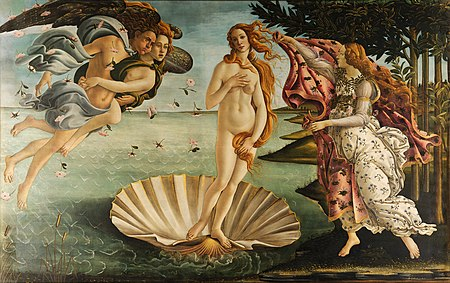

La nascita di Venere di Sandro Botticelli
HOME INFO Desctrizione
La Nascita di Venere è un dipinto a tempera su tela di lino (172,5 cm × 278,50 cm) di Sandro Botticelli. Realizzata per la villa medicea di Castello, l'opera è attualmente conservata nella Galleria degli Uffizi a Firenze.
Opera iconica del Rinascimento italiano, spesso assunta come simbolo della stessa Firenze e della sua arte, faceva forse anticamente collegamento con l'altrettanto celebre Primavera sempre di Botticelli, con cui condivide la provenienza storica, il formato e alcuni riferimenti filosofici. Rappresenta una delle creazioni più elevate dell'estetica del pittore fiorentino, oltre che un ideale universale di bellezza femminile.
La Nascita di Venere è da sempre considerata l'idea perfetta di bellezza femminile nell'arte, così come il David è considerato il canone di bellezza maschile. Poiché entrambe le opere sono conservate a Firenze, i fiorentini si vantano di possedere i canoni delle bellezze artistiche all'interno delle mura cittadine.